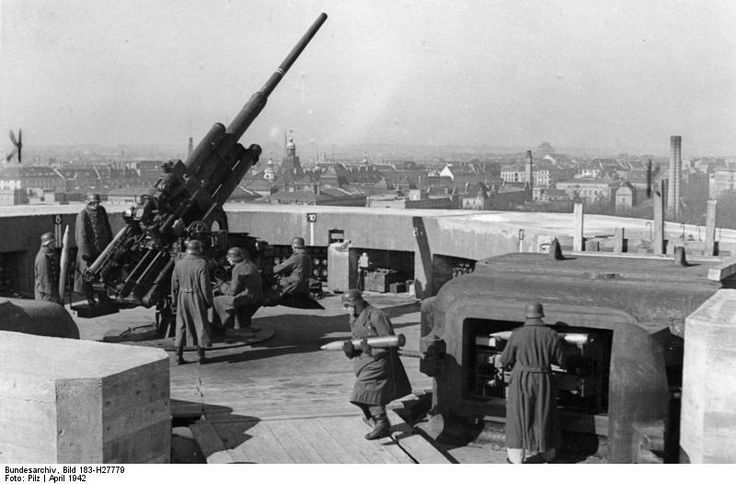
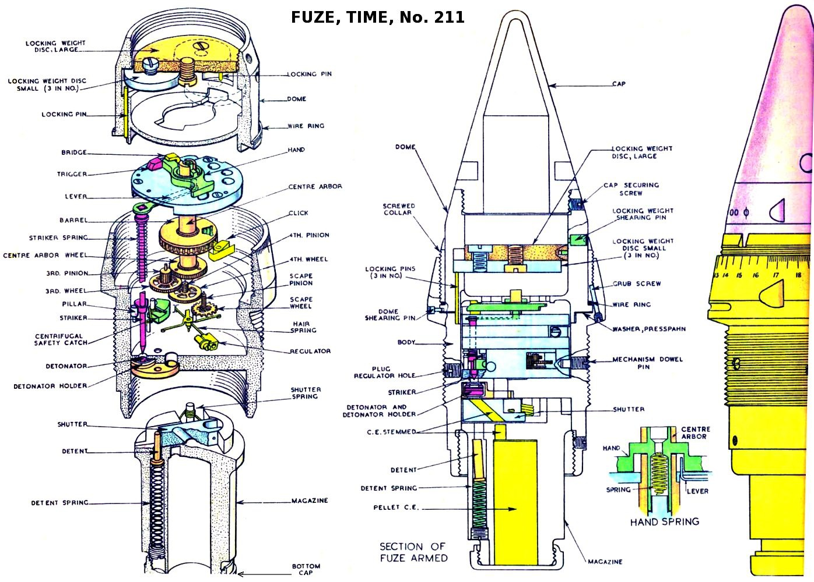
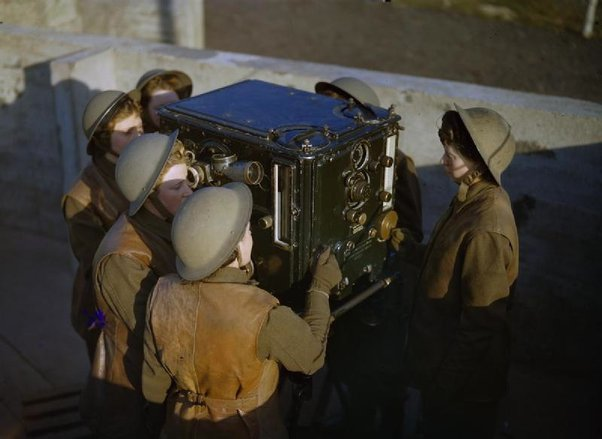
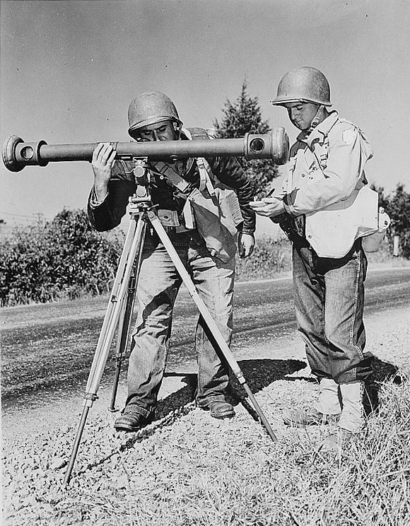
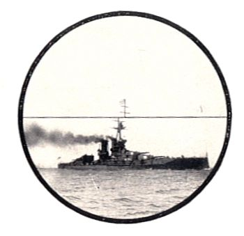
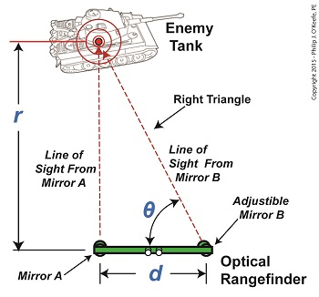
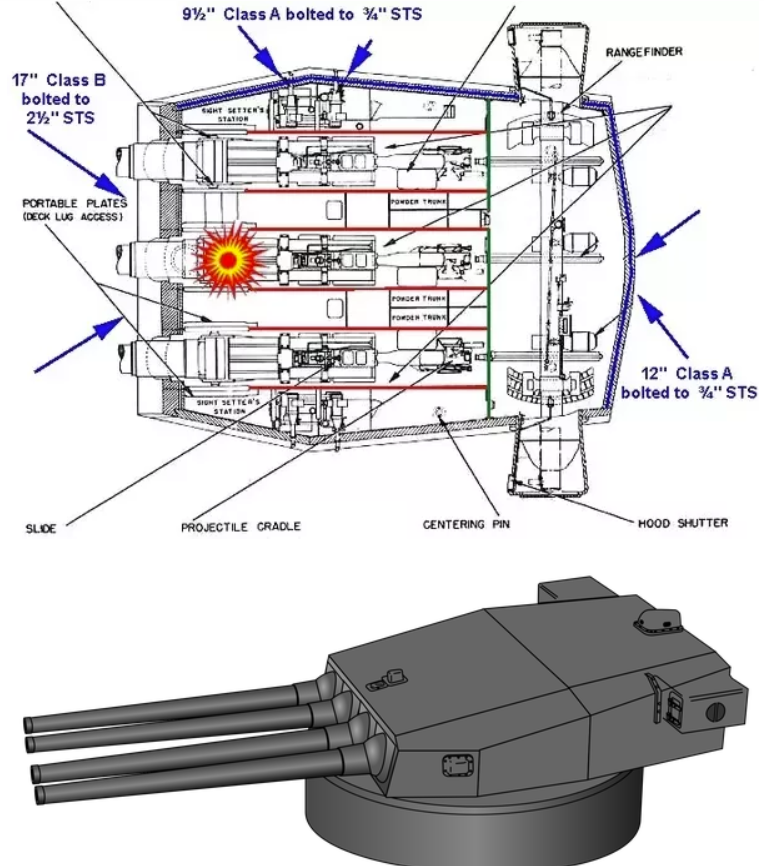
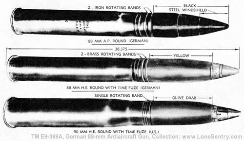

레이더 개발 이야기 (8) - 왜 육군에 레이더가 필요했나?
게시: 2022-11-03T06:30:37+09:00
<WW2 당시 고사포병의 고민> 당시 고사포는 본질적으로 눈과 손으로 조작하는 것이지만, 항공기의 속도가 수백 km/h로 빨라질 뿐만 아니라 고도가 수km로 높아지면서 대충 눈짐작만으로는 명중이 거의 불가능하게 되었음. WW2 당시 독일군의 유명한 88mm 고사포 (사진1) 의 포구 속도는 840m/sec. 포탄이 5km 상공까지 올라갈 때 평균 700m/sec의 속도를 낸다고 하면 약 7초가 걸리는 셈. 350km/h의 속도로 날아가는 B-17이라면 그 7초 동안 거의 500m를 이동. 그러니 적 폭격기의 속도는 물론 고도를 아주 정확하게 파악하지 못한다면 열심히 쏘아대는 포탄들은 적 폭격기는 건드리지도 못한 채 그냥 헛되이 뜨겁고 치명적인 파편이 되어 아군의 머리 위에 떨어진다는 뜻.

특히 적 폭격기의 고도를 정확히 포착하는 것은 매우매우 중요한 과제. 포탄이 그 고도에 도달할 때의 폭격기 위치를 예측하는데도 필요했지만, 그것보다 더 중요한 것은 바로 신관(fuze) 때문. 상식적으로 고사포탄으로 폭격기를 직격하기를 기대하는 것은 어려웠으므로 폭격기 근처에서 포탄이 저절로 폭발하도록 조정해야 했는데, 미군이 나중에 근접 신관(proximity fuze)를 개발하기 전까지는 크게 2가지 방법이 쓰임. 하나는 타이머 신관(timed fuze, 사진2), 다른 하나는 고도계 신관(altimeter). 타이머 신관은 글자 그대로 발사 후 몇 초 후에 자동폭발하도록 된 것이고, 고도계 신관은 기압이 일정 수준 이하로 떨어지면 자동폭발하도록 한 것. 그러면 그렇게 포탄 하나하나의 신관을 발사하기 직전에 조절해야 했고, 실제로 그렇게 했음.

문제는 어떻게 폭격기의 고도를 알아내느냐 하는 것.
<광학 거리측정기의 한계> 보통 대공포대에는 4문 또는 6문의 고사포가 배치되어 있는데, 이들은 각자 알아서 육감대로 쏘는 것이 아니라 포대마다 배치된 나름대로 정밀한 중앙 예측기(predictor, 사진1)에 의해 계산된 방위각과 고도에 맞춰 발사. 그렇게 쏘아대는 포탄의 신관들은 장전 직전에 이 예측기의 계산 결과에 따라 기계가 자동으로 신관을 세팅했음. 그래서 각 고사포들은 일종의 아날로그 기계식 컴퓨터인 그 예측기와 전기 케이블로 연결되어 있었고, 각 포대의 탄약은 예측기의 계산 결과에 따라 신관이 조정되었음.

위 사진1의 예측기를 둘러싼 여성 대원 6명은 모두 제각각의 역할이 있었는데 왼쪽에서 2번째 대원, 즉 뭔가 망원경 같은 것을 들여다보고 있는 사람이 고도를 측정하는 대원. 그 사람이 눈금을 제대로 맞추면 고도가 자동계산되고 그 고도까지 포탄이 올라가는데 걸리는 시간이 그 오른쪽 대원이 들여다보는 계기판에 계산되어 나온다고. 그런데 이게 얼마나 정밀했을까? 고사포병을 위해 알아내야 하는 폭격기의 고도는 지상에서 볼 때 수평으로부터의 각도와 폭격기까지의 거리를 알면 구할 수 있는데, 문제는 폭격기까지의 거리. 그 거리는 일정 거리를 둔 한쌍의 광학 망원경을 이용하여 삼각함수를 이용해서 구하는 것이 당시로서는 최선. 당시 널리 사용되던 거리측정기는 영상 일치형(coincidence rangefinder)였는데, 한쌍의 망원경과 반사경으로 하나의 목표물을 바라보되, 이 두 거울로부터 오는 아래 위 영상이 딱 일치하도록 눈금을 맞추고 그렇게 일치하는 거울의 각도를 읽어서 거리를 구하는 것. (아래 그림 2,3,4).
  
위 탱크 그림에서 θ 각도가 89.935°라고 하면 tan(θ) = tan(89.935°) = 881.473 그러면 다음 공식에 의해서 두 거울 사이의 거리에 이 값을 곱하면 거리를 구할 수 있음. r = d × tan(θ) r = 3 feet × 881.473 = 2644.419 feet (물론 당시에도 병사가 이걸 직접 계산하진 않았고 미리 계산된 표를 보고 읽었음... 그러니 우리는 죄책감 느끼지 말고 전자계산기 쓰면 됨) 문제는 측정요원이 눈으로 두 영상을 얼마나 제대로 맞추느냐, 그리고 저 예측기의 광학 망원경이 얼마나 정밀하냐, 그리고 저 기계식 아날로그 계산기의 계산이 얼마나 정확하냐 하는 것인데... 그 측정 및 계산 속도와 정확성 모두가 결코 만족스럽지 못했음. 상식적으로 저 두 거울 사이, 즉 d값이 가 넓을 수록 정밀도가 높아질텐데, 제한된 공간에서 움직여야 하는 고사포 예측기의 크기가 기껏해야 1미터 정도. (그래서 해군 전함의 거대한 포탑 양쪽에 들어가는 거리측정기가 육군용보다 더 정확했다고. 아래 그림5).

그래서 저런 predictor에 의해 계산된 솔루션에 따라 적 폭격기를 격추하려면 1대당 2만발의 포탄을 쏘아야 했음. 20mm 기관총탄이 아니라 사진1의 88mm 고사포 같은 대구경 포탄 2만발임. 88mm 고사포탄 1발의 무게가 대략 8~9kg이었으니 2만발이면... 하늘에 180톤의 쇳덩이를 쏘아올려야 겨우 적 폭격기 1대를 격추할 수 있다는 뜻.

(88mm 포탄들. 맨 위 포탄은 대전차용 파갑탄, 그리고 2번째 것은 시한 신관. 3번째 것은 미군의 90mm 시한 신관이 달린 90mm 대공포탄. 그래서 2번째 것과 3번째 것에는 포탄 끝부분에 뭔가 시간 조절용 눈금이 새겨진 것이 보임.)
그런데 저 고도 측정을 너무나 쉽게 해낼 수 있는 것이 바로 레이더였음. 적어도 이론상으로는 그랬음. 그래서 고사포를 담당하고 있던 영국 육군 당국은 공군 레이더 연구소에 파견된 육군 연구팀인 Army Cell에게 그런 것을 해낼 GL/EF (Gun Laying/Elevation Finder) 레이더를 개발하라고 지시한 것. 하지만 막상 해보니...